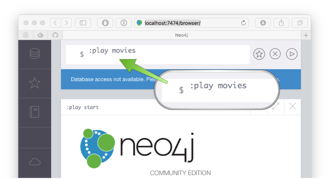
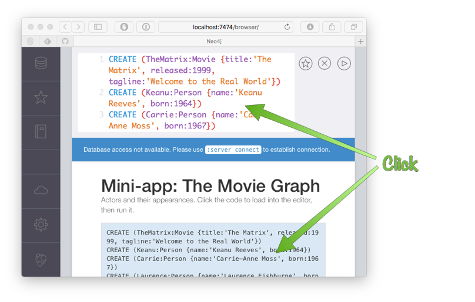
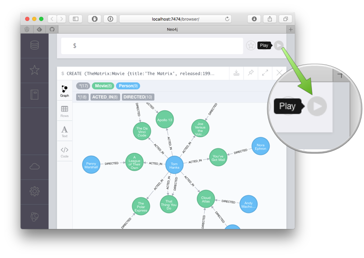

3 Populating the Data Model
Version: 4
3 Populating the Data Model
The first thing to do before we can get going is populate the data model. To do this head over to the Neo4j browser at http://localhost:7474/browser/ and type :play movies:
This will bring up a preview of the domain model that represents the movies database represented by a series of Cypher statements CREATE statements.
Cypher is the query language used by Neo4j. The following statement for example creates two new Neo4j nodes in the graph (one that represents a Movie and another that represents a Person):
CREATE (TheMatrix:Movie {title:'The Matrix', released:1999, tagline:'Welcome to the Real World'})
CREATE (Keanu:Person {name:'Keanu Reeves', born:1964})The value of the left side of the expression TheMatrix:Movie is the name of the node, like a variable name and is not stored in the database.
The value of the right side is the Node label (in this case Movie).
The values within the curly brackets are the node attributes.
The names of the nodes can be used in later statements to create relationships between the nodes:
CREATE (Keanu)-[:ACTED_IN {roles:['Neo']}]->(TheMatrix)The above CREATE statement creates a relationship between the Keanu node and the TheMatrix node. The relationship type is ACTED_IN and like nodes relationships can have attributes (in this case a roles attribute).
Click on the code to populate it into Neo4j browser editor:

This will place the necessary Cypher statements into the Neo4j browser editor that will populate the example database. You can then press the "Play" button to run the code and in the window below will appear a Graph visualization of the database model:
